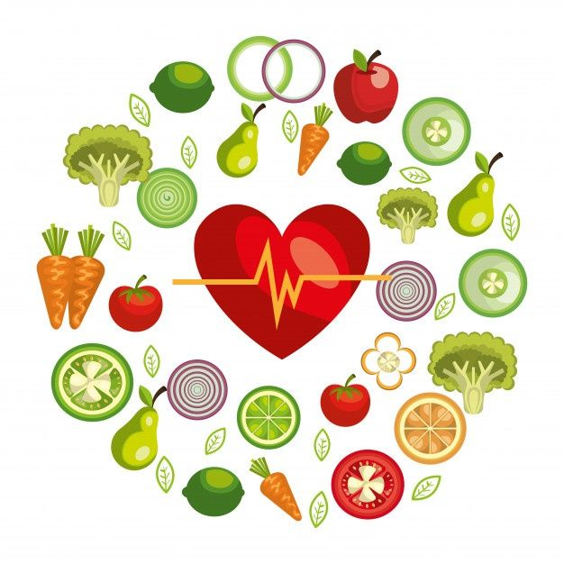

Desde aumentar tu energía hasta fortalecer tu sistema inmunológico.
Una dieta equilibrada proporciona los nutrientes necesarios para mantener un nivel óptimo de energía.
Consumir alimentos saludables fortalece el sistema inmunológico y previene enfermedades crónicas.
Los alimentos ricos en antioxidantes y grasas saludables mejoran la función cognitiva y la memoria.
Una alimentación balanceada ayuda a mantener un peso saludable y prevenir la obesidad.
Una buena alimentación no solo impacta la apariencia física, sino que también mejora el estado de ánimo, la productividad y la calidad de vida en general. Comer bien ayuda a regular el sueño, reducir el estrés y mantener una vida más activa.
